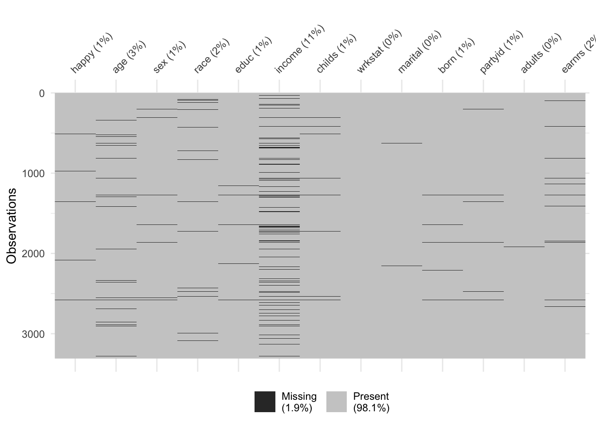
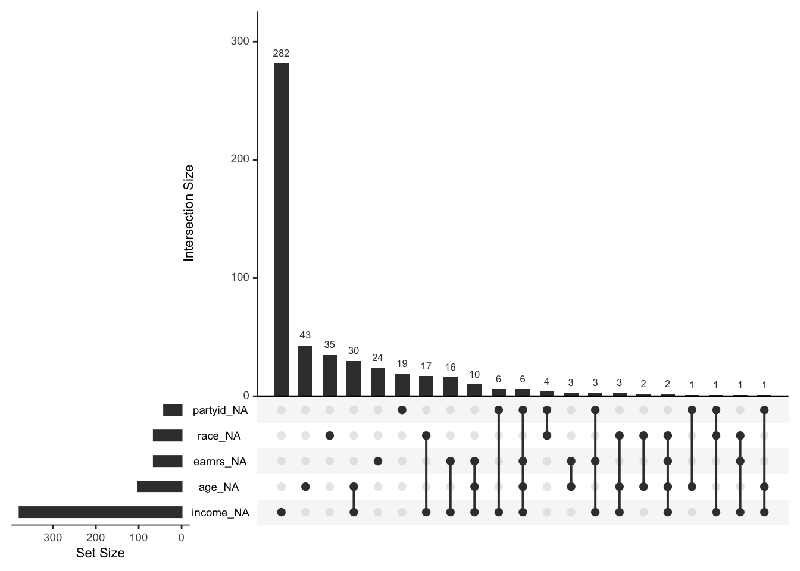
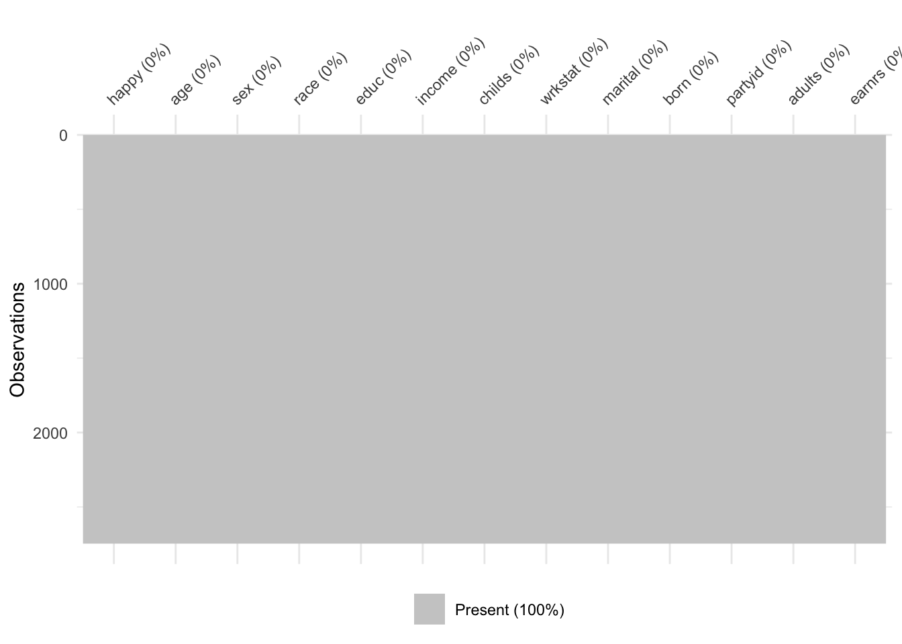

library(naniar)
gss_na_codes <- c(-99, -999, "NA")
data <- naniar::replace_with_na_all(
data, condition = ~.x %in% gss_na_codes
)Missing Data
Dealing with missing data in a consistent manner is one of the most important aspects of feature engineering.
To understand modern approaches to handle missing data it is critical to have a basic understanding of missing data mechanisms, and the methodological approaches used for addressing each mechanism.
Missing Data Mechanisms
Much attention is paid to the mechanisms producing missing data in the statistics and applied sciences literature.
Knowing how the missing data came about is critical for knowing how to handle it in a subsequent analysis.
Although attention to missing data mechanisms has historically not been a primary focus in the ML literature, this has been changing.
A common framework for understanding missing data mechanisms was described by Rubin (1976). Here we will briefly describe these mechanisms in the context of our current data example.
Missing Completely at Random (MCAR)
In MCAR, the probability of a value being missing is unrelated to the value itself or any other observed or unobserved variable. This is a purely random and unsystematic process.
Imagine a cat opening up your dataset in Excel and walking across the keyboard, randomly deleting different cells.
Definition: Missingness in self-reported happiness, for example, is unrelated to the respondent’s true happiness level or any other variables.
Example: Let’s say there is a glitch in the online GSS survey and for some respondent’s questions are randomly skipped. This means the probability of missingness is purely random, and it does not depend on other variables (e.g. income, age, or happiness levels).
Implication: Dropping these cases (listwise deletion) or using simple imputation will not bias the results, although efficiency is reduced.
Missing at Random (MAR)
In MAR, the probability of a value being missing is systematically related to other observed variables in the dataset, but not to the unobserved value itself.
Definition: Missingness in happiness depends on other observed variables but not directly on happiness itself.
Example: Suppose in the GSS, individuals with higher incomes were less likely to answer the happiness question. Missingness on happiness is explained by income, which is observed. Conditional on income (having income in our model as a predictor), the probability of missingness does not depend how happy one is.
Implication: Methods like multiple imputation (MICE), missForest, or regression-based imputation can use income (and other observed covariates like marital status, education) to predict and impute missing happiness values without bias.
Missing Not at Random (MNAR)
Definition: Missingness in happiness depends on the unobserved happiness score itself.
Example: Respondents who are very unhappy may avoid answering the happiness question because it feels too personal, while those who are extremely happy may skip it because they consider it obvious. Missingness is directly tied to the unreported happiness level.
Implication: Standard imputation methods will be biased. Handling MNAR requires explicitly modeling the missingness mechanism (e.g., selection models, pattern-mixture models)
Handling Missing Data in R
Often a first step in handling missing data involves recoding missing values as NA. Writing bespoke code to handle the different types of missing data one might encounter is tedious and unnecessary.
The naniar (Tierney and Cook 2023) package in R contains many convenience functions for managing missing data in R. Here we demonstrate some of that functionality.
Recoding Values with NA
Now that we have a dataset with missing values we can use naniar to recode these values to NA. In our current data example this is already done, but this code might be useful for other projects where you import data
See the naniar vignette on recoding NA values for more detailed information on the package functionality.
Missing Data Visualization
Once we have recoded our data in a consistent manner we can use visualizations to explore the missing data. The vis_miss() function from naniar is a good starting point for visualizing the amount of missing data in our dataset. The plots shows the missing values in black and non-missing values in gray. In addition, percentages of missing data in both the dataset and individual variables are provided.
library(naniar)
naniar::vis_miss(data)
It is often useful to look at combinations of missingness among different variables.
naniar::gg_miss_upset(data)
We can also look at the percentage of missing data across a factor variable.
naniar::gg_miss_fct(x = data, fct = marital)Many missing data visualizations are described in the naniar vignette on missing data visualization including plots for exploring missing data mechanisms.
Missing Data Activity
Below is a small dataset looking at predictors of happiness. Some values are missing.
In small groups please speculate on why each value might be missing and which type of missing data mechanism it represents: MCAR, MAR, or MNAR.
# Columns: id, happiness (target), age (feature), income (feature), education (feature)
# NA indicates missing values
example_data <- data.frame(
id = 1:15,
happiness = c(NA, 8, 5, NA, 6, 9, 4, 7, NA, 5, 6, 8, 7, NA, 4),
age = c(25, NA, 30, 40, 22, 35, NA, 29, 31, 28, 34, NA, 27, 33, 26),
income = c(50000, 55000, 6500, 70000, NA, NA, NA, 62000, NA, 45000, 52000, NA, 58000, NA,61000),
education = c("Bachelor","Bachelor","Master","Master","HighSchool","Bachelor","HighSchool","Master","Bachelor","HighSchool","Master","Master","Bachelor","HighSchool","Bachelor")
)
example_data id happiness age income education
1 1 NA 25 50000 Bachelor
2 2 8 NA 55000 Bachelor
3 3 5 30 6500 Master
4 4 NA 40 70000 Master
5 5 6 22 NA HighSchool
6 6 9 35 NA Bachelor
7 7 4 NA NA HighSchool
8 8 7 29 62000 Master
9 9 NA 31 NA Bachelor
10 10 5 28 45000 HighSchool
11 11 6 34 52000 Master
12 12 8 NA NA Master
13 13 7 27 58000 Bachelor
14 14 NA 33 NA HighSchool
15 15 4 26 61000 BachelorHandling Missing Data
There are a number of ways to handle missing data. Below I will discuss some of the most common ways of addressing missing data.
Listwise Deletion
Listwise deletion (also called complete-case analysis) is one of the simplest methods for handling missing data in a dataset.
When performing listwise deletion we remove any row that has one or more missing values across any variable used in the analysis.
After deletion, only rows that are complete for all variables remain.
For example, our example GSS data has 3,309 rows before we address the missing data. If we only kept rows that contained no missing data we would have 2,780 observations. You can perform listwise deletion on your data using the complete.cases() function as demonstrated below. Then you can visualize the missing data to ensure there is no missingness on the new dataset.
# nrow(data) # 3,3309 rows
data_cc <- data[complete.cases(data),]
nrow(data_cc)[1] 2746naniar::vis_miss(data_cc)
Now, listwise deletion should really only be used if data is missing completely at random (MCAR). In this case it can still provide unbiased results, although they can be less efficient (reduced power and more uncertainty).
Imputation
Imputation is the process of filling in missing values in a dataset with estimated or predicted values so that you can perform analyses without dropping incomplete cases.
Unlike listwise deletion, imputation retains all observations, reducing data loss. Imputation can be simple (deterministic, like a mean) or more involved (stochastic, model-based).
Estimated Statistic
A simple approach to imputing missing values for a feature is to compute descriptive statistics such as the mean, median, or mode (for categorical) and use that value to replace the NA values.
Although computationally efficient, this approach does not consider any other attributes for a given observation when imputing.
The tidymodels (Kuhn and Wickham 2020) R package has a number of useful functions for machine learning. Here we use the package to perform mean imputation on our dataset.
library(tidymodels)
# create a recipe
rec <- recipe(happy ~ ., data = data) %>%
step_impute_mean(all_numeric_predictors()) %>%
step_impute_mode(all_factor_predictors())
# apply mean imputation to predictors
# prep the recipe (estimates imputation values)
rec_prep <- prep(rec)
# check the imputed values
data_mi <- bake(rec_prep, new_data = NULL)
naniar::vis_miss(data_mi)
K-Nearest Neighbor
Another popular method for performing imputation is k-nearest neighbor.
Now, instead of just filling in a missing value with a simple number like the mean, KNN looks for other respondents who are most similar (the “nearest neighbors”) and uses their information to fill in the blank.
How KNN Imputation Works
- Measure similarity
- For the student with a missing value, KNN looks at the other variables (educ, martial, partyid).
- It finds the k students who are most “similar” (closest in the data space).
- For the student with a missing value, KNN looks at the other variables (educ, martial, partyid).
- Borrow information
- If we set
k = 3, the algorithm finds the 3 most similar students.
- If we set
- Fill in the blank
- It might take the average of those 3 scores and use that as the imputed value.
- Or, depending on settings, it could pick a weighted average (closer neighbors count more).
Better than Mean Imputation?
Think of guessing someone’s favorite pizza topping:
- Mean imputation: “Most people like pepperoni, so I’ll assume this person does too.”
- KNN imputation: This person is very similar to Iris, Naomi, Owen, Naveen, and Stella who all like pineapply. Instead, I’ll assume they probably like pineapple.
library(tidymodels)
# create a recipe
rec <- recipe(happy ~ ., data = data) %>%
step_impute_knn(all_predictors())
# apply mean imputation to predictors
# prep the recipe (estimates imputation values)
rec_prep <- prep(rec)
# check the imputed values
data_knn <- bake(rec_prep, new_data = NULL)
naniar::vis_miss(data_knn)Tree-Based Imputation
Tree-based imputation methods use decision trees (or random forests) to predict missing values based on the other variables in the dataset. Similar to KNN methods, tree-based methods make a tailored prediction using patterns in the data.
Tree-based methods are especially nice for imputation as they handle non-linearities and interactions, and can accomodate mixed data types, like continuous and categorical variables.
How Tree-Based Imputation Works
- Treat the missing variable like an outcome
- Suppose some people are missing their income.
- A tree is trained to predict income from other available variables (like education, age, occupation).
- Learn patterns in the data
- The tree splits the dataset into groups that have similar income levels.
- For example:
- If education > 16 years → higher income group
- If education ≤ 16 and occupation = retail → lower income group
- Predict the missing values
- For a person with missing income, the model uses their other information (education, age, etc.) to drop them into the right “leaf” of the tree.
- The average (or majority class, if categorical) in that leaf is used as the imputed value.
Better than Mean Imputation?
Think of tree-based imputation like asking:
“Given your age, job, and education, people like you usually make about X — so we’ll use that as your missing value.”
This is smarter than saying “everyone makes the same average income” (mean imputation) or even “let’s just look at your 3 closest neighbors” (KNN).
References
Kuhn, Max, and Hadley Wickham. 2020. Tidymodels: A Collection of Packages for Modeling and Machine Learning Using Tidyverse Principles. https://www.tidymodels.org.
Rubin, Donald B. 1976. “Inference and Missing Data.” Biometrika 63 (3): 581–92.
Tierney, Nicholas, and Dianne Cook. 2023. “Expanding Tidy Data Principles to Facilitate Missing Data Exploration, Visualization and Assessment of Imputations.” Journal of Statistical Software 105 (7): 1–31. https://doi.org/10.18637/jss.v105.i07.